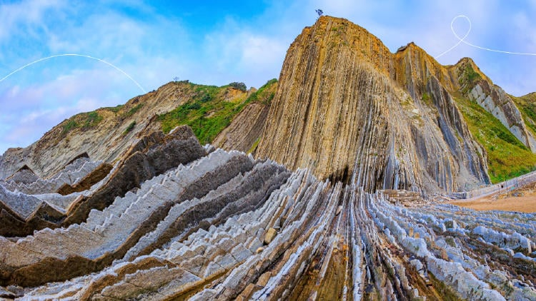
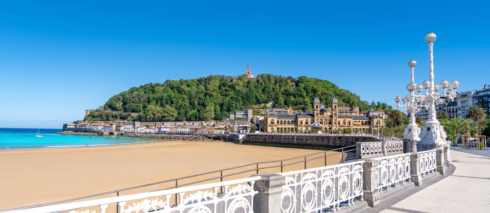
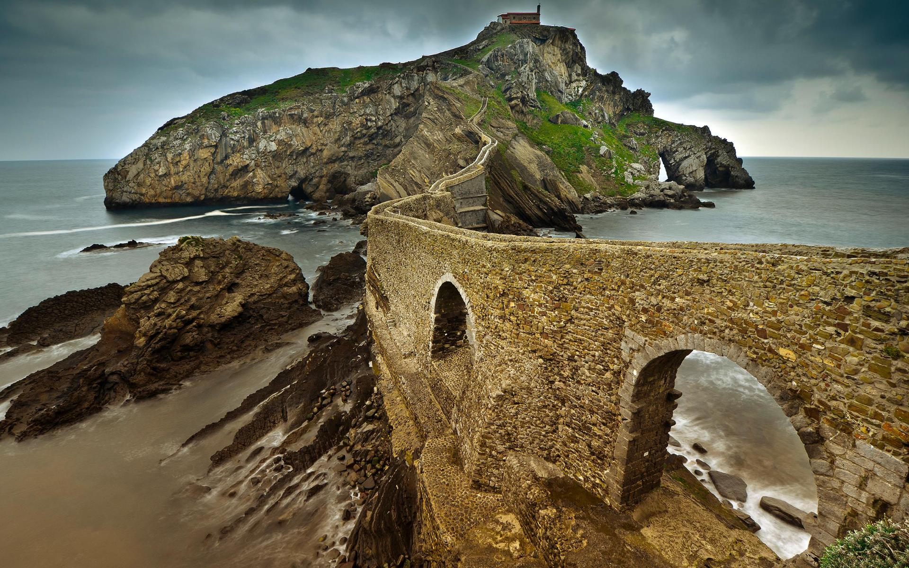
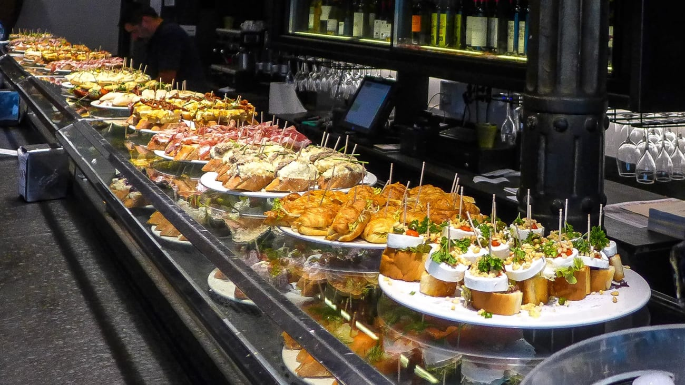
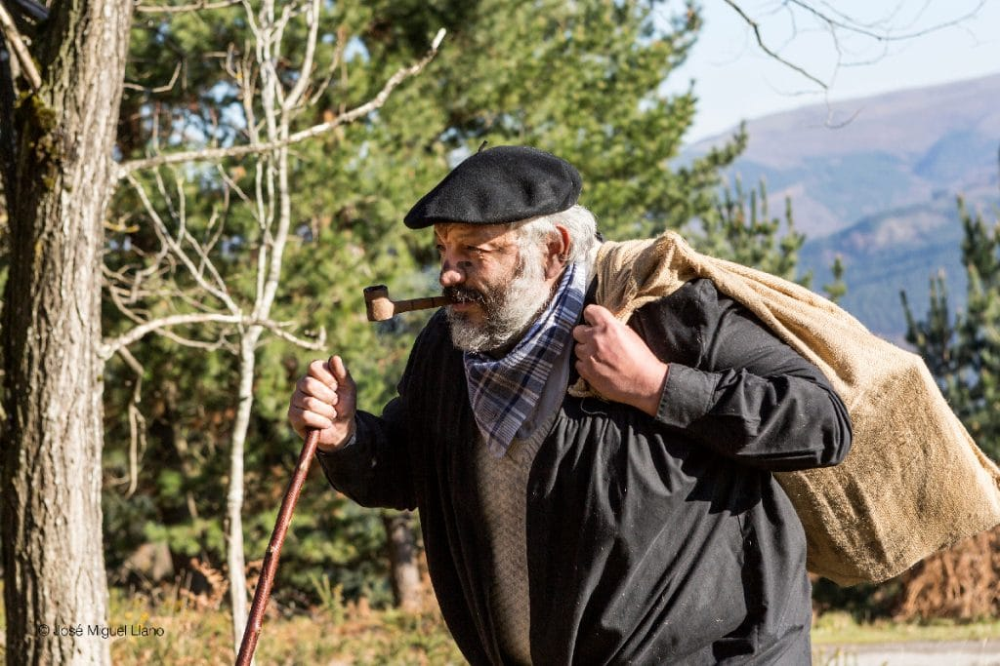
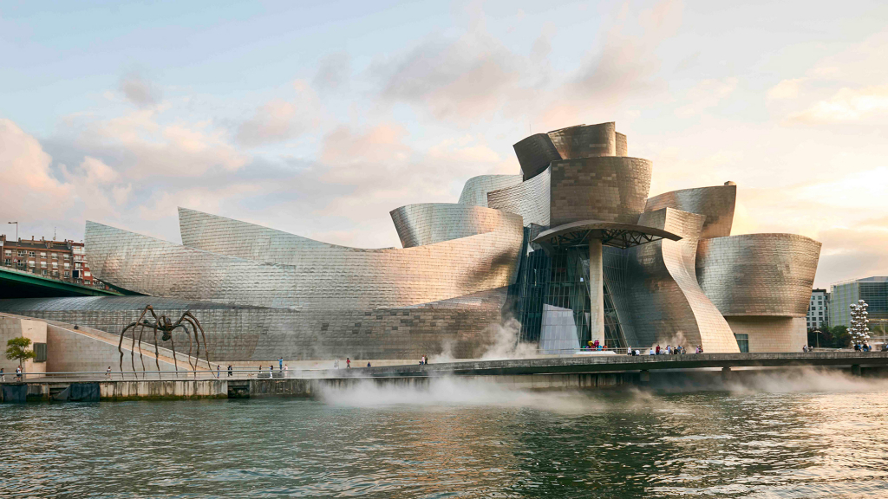
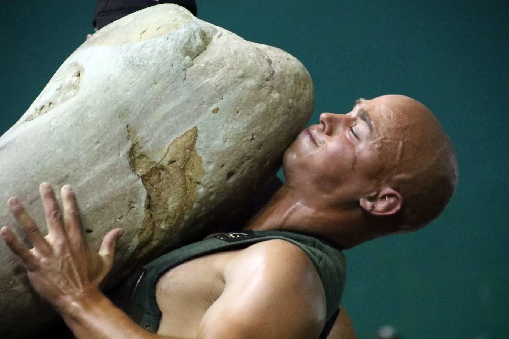

01 — Introduction
What is the Basque Country?
The Basque Country is a region located in northern Spain and southwestern France, along the Bay of Biscay. It is known for its strong cultural identity, unique language, excellent gastronomy, and beautiful landscapes. The Basque people have preserved their traditions for centuries and are very proud of their heritage.
The region combines mountains, green valleys, and dramatic coastal cliffs, making it one of the most beautiful areas in Europe.

The dramatic rock formations at the Basque Coast Geopark near Zumaia
02 — Landscapes
Landscapes of the Basque Country
The Basque Country is famous for its green hills and rugged coastline. The area around Zumaia, Deba, and Mutriku is known for the Basque Coast Geopark, where rock formations reveal millions of years of geological history.
One of the most famous cities is San Sebastián, located on the Bay of Biscay. The city is known for its beaches and beautiful bay called La Concha Bay, whose shell shape gives it its name. La Concha Beach is often considered one of the most beautiful urban beaches in Europe.


Left: La Concha Bay in San Sebastián | Right: San Juan de Gaztelugatxe
03 — Culture
Basque Culture
Basque culture is one of the oldest in Europe. One of its most fascinating elements is the language Euskera (Basque), which is unrelated to Spanish, French, or any other language in the world.
Cultural traditions include:
- Folk dances and music
- Rural sports competitions
- Festivals with traditional clothing
04 — Gastronomy
Traditional Basque Food
The Basque Country is famous for having some of the best cuisine in the world. Many dishes come from both the sea and the mountains.
Pintxos
One of the most famous foods is pintxos — small snacks usually served on bread with toppings like fish, cheese, vegetables, or meat. They are often held together with a toothpick and displayed on bars.

A classic display of pintxos at a bar in San Sebastián
Typical Basque dishes include:
- Bacalao al pil-pil (cod with garlic sauce)
- Txuleton (large grilled steak)
- Marmitako (tuna and potato stew)
- Kokotxas (fish cheeks cooked in sauce)
Traditional Bread
Talo is a corn-flour flatbread traditionally eaten with chorizo or other fillings.
Desserts
A famous dessert is Pantxineta, a puff-pastry cake filled with custard cream and topped with almonds.
05 — Traditional Clothing
Traditional Clothing
Traditional Basque clothing often appears during festivals and cultural celebrations. Typical elements include:
- Txapela – a traditional black beret worn by many Basque men
- Long skirts, aprons, and headscarves for women
- Traditional farmer-style clothing called casera
During the Santo Tomás festival, many people dress in traditional outfits inspired by mountain farmers.
06 — Music
Music and Instruments
Music is an important part of Basque culture. Traditional instruments include:
- Txalaparta – a percussion instrument played by two people
- Txistu – a small flute used in festivals
- Alboka – a traditional horn instrument
Basque music can range from traditional folk songs to modern rock bands that sing in Euskera.
07 — Christmas Tradition
The Olentzero
One of the most famous Basque traditions is Olentzero — the Basque equivalent of Santa Claus. He is usually described as:
- A friendly charcoal burner from the mountains
- Wearing traditional Basque clothing and a txapela
- Carrying gifts for children
On Christmas Eve, people carry figures of Olentzero through the streets while singing songs and collecting sweets. In modern celebrations he is sometimes accompanied by Mari Domingi, a female character who helps deliver gifts.

Olentzero — the beloved Basque Christmas figure
08 — Popular Places
Popular Places in the Basque Country
Some of the most famous places to visit include:

Bilbao
Home of the Guggenheim Museum. Modern architecture and a vibrant art scene.
San Sebastián
Famous for gastronomy and beaches. Home to the iconic La Concha Beach.

Vitoria-Gasteiz
The political capital of the Basque Country. Known for medieval streets and green parks.
San Juan de Gaztelugatxe
A small island connected by a dramatic stone bridge. Famous filming location for Game of Thrones.
09 — Sports & Fun Facts
Sports and Fun Facts
Basque culture also includes traditional sports such as:
- Stone lifting
- Wood chopping competitions
- Coastal rowing races like Kontxako Bandera, one of the most famous regattas in Spain

Harrijasotzaile — the traditional Basque stone-lifting sport
Fun Facts
- Basque people take food very seriously — some cities have hundreds of pintxo bars.
- Gastronomic clubs (txokos) are common places where friends cook together.
- The Basque language is one of the oldest living languages in Europe.